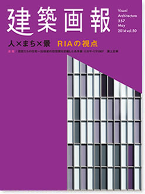

|

|
人×まち×景 RIAの視点
アール・アイ・エー
1953年に創立し、昨年60周年を迎えたRIAは、およそ半世紀にわたりまちづくりに携わっている。本特集号ではRIAのかかわったまちと建築物を、スケールを変えてテーマごとに紹介した。異なる6つの視点からそれぞれの作品を繰り返し見ることで、設計者がどのような役割を担っているのか、そこに共通するRIAの設計思想が現れてくると考えた一冊。
Visual Architecture 357 May 30 2014 vol.50
建築画報No357
2014年5月30日発刊
本文112ページ
仕様 A4変形判
定価 3,300円（税込）
ISBN978-4-901772-79-2
|
|
|
建築画報 Vol.357 目次
002 巻頭言 代表取締役 社長 宮原義昭
004 CHAPTER 1
まちを俯瞰してみる
Having an aerial image of the cities
二子玉川ライズ／エリアなかいち／
嘉手納タウンセンター／金沢再開発／天王洲アイル再開発
016 CHAPTER 2
まちをつなぐ
Connecting cities
DAIKANYAMA T-SITE T-SITE GARDEN／二子玉川ライズ／
くまもと森都心／bono相模大野／天王洲ふれあい橋／
カフーナ旭橋（C街区）／ナビオス横浜／エリアなかいち／
世田谷区立松沢小学校／近江町いちば館／Q FRONTビル
030 CHAPTER 3
人の集いを演出する
Creating space for gatherings
DAIKANYAMA T-SITE T-SITE GARDEN／二子玉川ライズ／
エリアなかいち／近江町いちば館／くまもと森都心／
世田谷区立松沢小学校／アイネスフクヤマ／
かんなみ知恵の和館／bono相模大野
044 座談会-1 建物とまちとのかかわり
048 CHAPTER 4
建物の在り様を表現する
Expressing buildings as they are
田辺市文化交流センター「たなべる」／
かんなみ知恵の和館／泉佐野市火葬場／
築上町火葬場／浜松市浜北斎場／COCOLAS大津／
bono相模大野／市営上田駅お城口第二駐車場／
エルグレース神戸三宮タワーステージ／葵タワー／
二子玉川ライズ／昭代保育園／
世田谷区の公益施設「池尻複合施設」／
多治見市立池田小学校／世田谷区立松沢小学校／
富山第一銀行高岡支店／エリアなかいち／
名駅イーストビル／ウェストパークタワー池袋（旧マイアトリア池袋）／
西巣鴨さくらそう保育園／グランダ大井町
066 CHAPTER 5
空間に思いを託す
Projecting our mind into the spaces
いなべ市立笠間保育園／西巣鴨さくらそう保育園／
昭代保育園／世田谷区立松沢小学校／多治見市立池田小学校／
妙高市総合体育館・はね馬アリーナ／名駅イーストビル／
toko-tokoおおたわら／木の葉モール／bono相模大野／
品川シーサイドフォレスト／パークコート麻布十番／あべのnini／
K邸／パークハウス阿佐ヶ谷レジデンス／ファーストプレイス横浜
笠間広域斎場／築上町火葬場／浜松市浜北斎場
080 CHAPTER 6
人と自然によりそう
Coming close to human and nature
いなべ市立笠間保育園／二子玉川ライズ／
鶴舞団地／笠間広域斎場／柏崎地域広域組合斎場／
築上町火葬場
090 座談会-2 設計者として大切にしていること
094 PROJECT in progress
二子玉川東第二地区再開発（Ⅱ-a街区）／
JR成田駅東口地区再開発（A棟、B棟）／
京急蒲田西口駅前地区再開発／青森中新町センター地区／
川崎市立上丸子小学校 ／静岡駅前南町 10地区再開発／
南小岩七丁目西地区再開発／小杉3丁目中央地区再開発／
大泉学園駅北口地区再開発／青島李滄区公共市民福祉センター／
阿波市新庁舎及び交流防災拠点施設／
広島ガーデンシティ白島城北ウエストタワー／
阿波市給食センター／広島駅南口Bブロック再開発／
愛媛県西条市庁舎新館／旧耳成高校改修／葺合高校校舎／
鈴鹿市立平田野中学校／三山木保育所移転新築／
稲沢西小学校屋内運動場／東郷町立中部保育園／
碧南市福祉センター／福井市東安居団地／
富山市西町南地区再開発／福井駅西口中央地区再開発／
東海太田川駅西地区再開発
102 INDEX
108 建築データ
112 奥付
113 information
114 巨匠たちの住宅〜20世紀の住空間を定義した名作群⑧
カサ・ミラ1907 淵上正幸